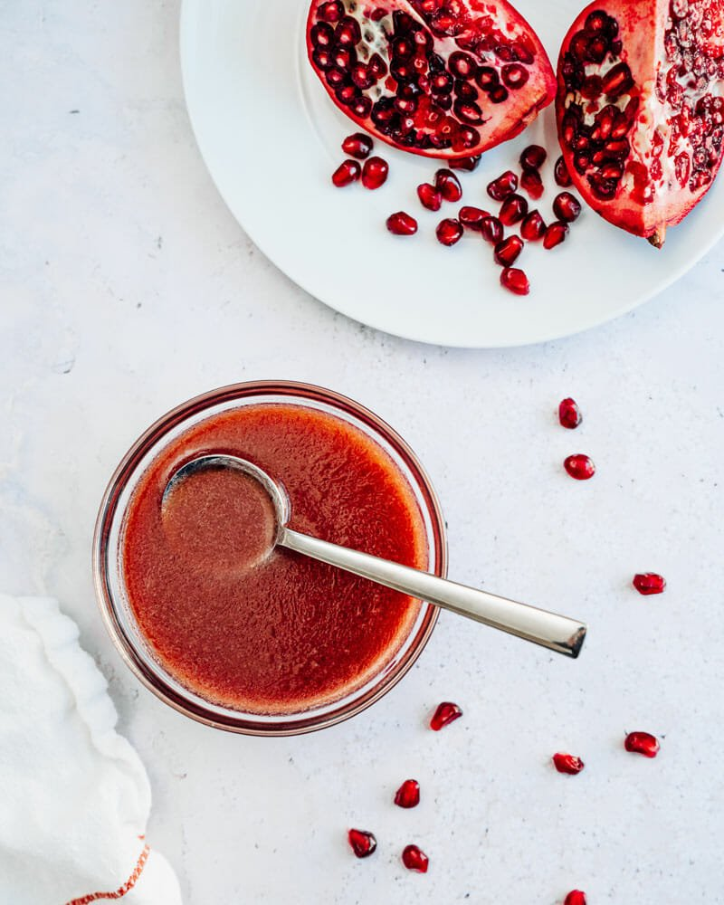

Pomegranate Vinaigrette

Description:
Today I wanted to share with you a delicious recipe for a
pomegranate vinaigrette that will have you licking the bowl
at the end of the meal. This is a recipe that I developed while
working in professional restaurants and actually got to put
on the menu. It goes great in a fall or winter salad or to pair
with a lighter protein like salmon.
Do you want to know the best part? This will only take a few minutes
to make, and I guaruntee that everyone at your next party will be
raving about it for weeks. Let's get started. Here's what you'll need
to buy.
Ingredients
- Pomegranate Juice: 600g
- Pickle Juice: 150g
- Dijon Mustard: 3 Tablespoons
- Honey: 3 Tablespoons
- Canola Oil: 300g
- Extra Virgin Olive Oil: 50g
- Salt and Pepper to taste
Special Equipment
Steps
- Add the pomegranate juice, pickle juice, dijon, and
honey into the pitcher of a relatively strong blender.
- Run the blender on high until the mixture is homogenous
- With the blender still running, slowly drizzle in the canola oil.
(Olive oil can develope an off taste if blended too much so we save
that for last.)
- Repeat the process with the olive oil.
- Once everything is incorporated season to taste with
salt and pepper. This is your dressing so add until you feel it tastes right.
- Enjoy!
Thank you guys so much for checking out this recipe. Give it a shot and let me know what you decide to put it on!